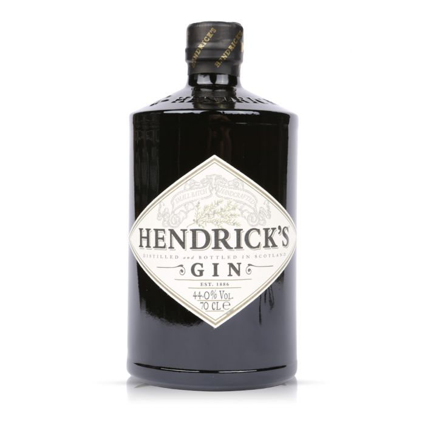

קצת על קוקטיילים
קוקטייל הוא משקה אלכוהולי מעורבב. קוקטייל לרוב מכיל משקה אלכוהולי מזוקק כמו וויסקי, טקילה, ערק וכו', המעורבבים עם סוכר, לעיתים בדמות של סוכר נקי, אך לעיתים סירופ או ליקר, ותוספות נוספות המכונות "מיקסרים", למשל ביטרס ומיצים מירקות ופירות. הקוקטיילים לרוב מוכנים לפי הזמנה תקופה קצרה לפני הגשתם בברים, אך קיימים גם קוקטיילים תעשייתיים הנמכרים מוכנים ומבוקבקים. קיימים מתכונים המוכרים על ידי איגוד הברמנים הבינלאומי הנחשבים מתכונים קלאסיים. לצידם, ברים רבים מגישים קוקטיילים מקוריים משלהם או גרסאות מקומיות או מודרניות של המתכונים הקלאסיים.

וודקה
ווֹדקה הוא משקה חריף ומזוקק חסר צבע ממשפחת המשקאות הלבנים, המופק באמצעות התססה וזיקוק של דגנים או תפוחי אדמה.

רום
This a demo experiment to skew image container. It looks good.

ג׳ין
ג'ין הוא משקה אלכוהולי מזוקק חסר צבע ממשפחת המשקאות הלבנים המופק באמצעות התססה וזיקוק של דגנים.